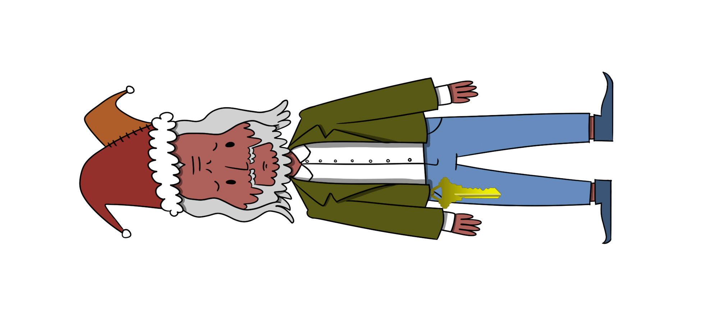

7) Get Access To The Steam Tunnels¶
Challenge¶
Difficulty: 3/5
Gain access to the steam tunnels. Who took the turtle doves? Please tell us their first and last name. For hints on achieving this objective, please visit Minty’s dorm room and talk with Minty Candy Cane.
Answer¶
Krampus Hollyfeld
Solution¶
Go to Minty’s dorm. You’ll see Krampus moving into the closet. If you go into tha closet, there is a lock on the door.
Note
Minty has a very messy closet. May smell bad.
On Minty’s desk you’ll find the Key Bitter.
Krampus has the key hung on his belt. Find the picture in the Sources (in Chrome Dev Tools), or be a true spy and use the snipping tool or PrtSc to get your own photo (not so subtle reference to the talk here).
Using the templates in the git repository, you can get an estimation of the code/bits.
From there, it’s all about cutting multiple keys until you find the one that fits in the lock. 1
The final pattern is 122520

Footnotes
- 1
Rumor has it, the ghosts of unlucky hackers can still be heard trying to find the right key.